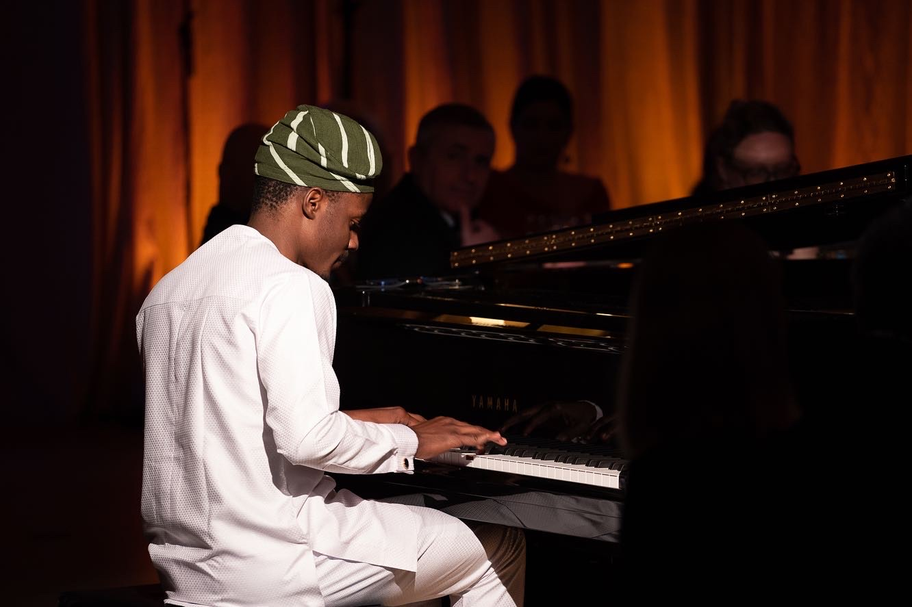

Biography

Digba Ogunbiyi was born in Lagos, Nigeria. His parents recall that he started making rhythmic sounds with random objects at the age of 5. At age 7, he started playing drums at the local church where his parents attended.
After completing secondary school, Digba studied at the peter King college of music Lagos, and was then awarded full scholarship to study at the Music society of Nigeria.
While studying for a degree at the University of Lagos, Digba became an active voice in the Nigerian Music scene working with Artists like Lagbaja, Etuk Ubong, The Cavemen, Perpetual Atife and Michael Oloyede performing in various venues and festivals such as the Lagos Jazz festival, Satchmo international Jazz festival, Lagos Jazz Series and the Abuja international Jazz Festival.
In 2016, Digba visited NYC briefly to study at the New York jazz workshop where he studied with pianists Frank Kimbrough and Amina Figarova. During this visit, he met renowned pianist James Frances whom he also had the opportunity of taking lessons from.
Digba traveled back to the U.S in the fall of 2017. During this visit, he auditioned with Dr Min Kim and was awarded scholarship to study with pianist Allen Farnham at the New Jersey City University. Upon completion of a Master’s degree, Digba was admitted to the prestigious Eastman School of School for a DMA degree where he studies with Gary Versace.
Since moving to the U.S, he has had the opportunity of working with several artists such as John Benitez, Dave Rivello, Steven Bryant, Clay Jenkins and Thank you scientist performing in various venues and festivals across the country.
His Debut Album Ade’digba was released in 2020 and has been described as an eclectic blend of Yoruba rhythms and western harmonies. As a bandleader, Digba performs primarily with his quartet consisting of Jalin Shiver, Chris paredes and Bill Moring.
He is a recipient of several awards including Music Quest award (piano category) , Steinway and Sons award for piano proficiency, Ray Wright Prize and many more.